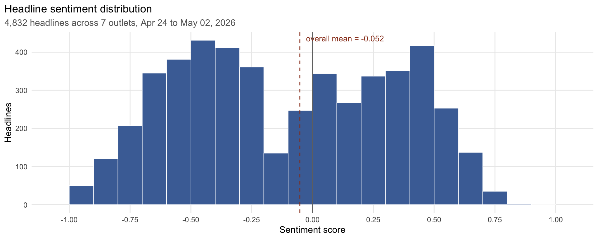
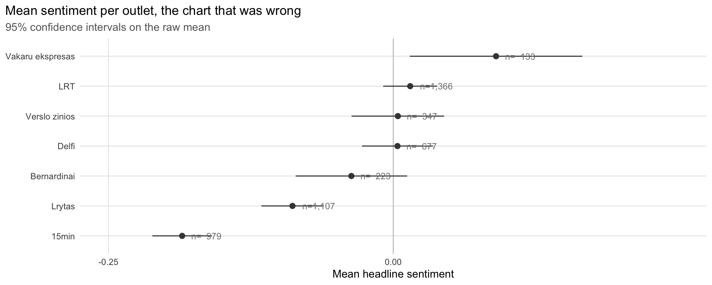
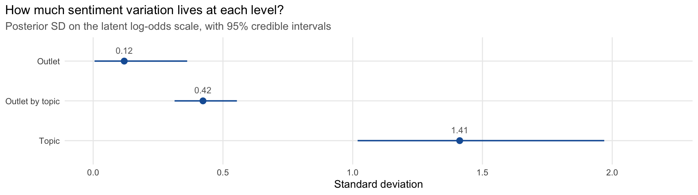
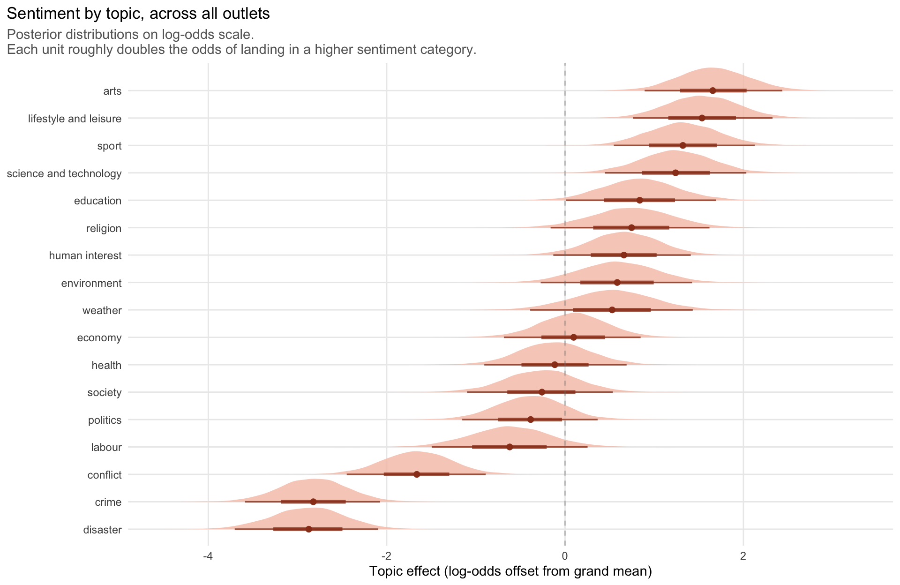
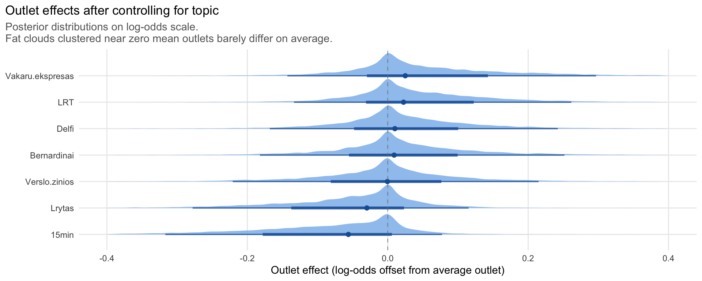
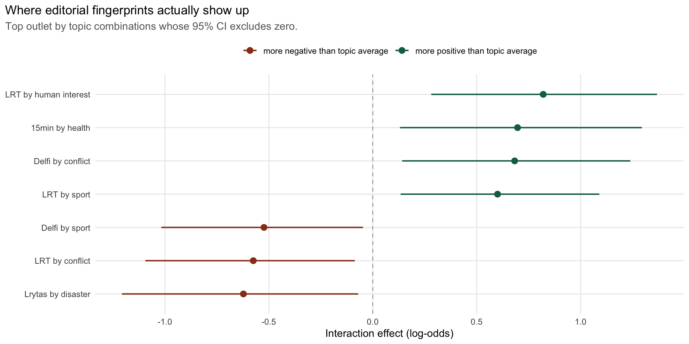
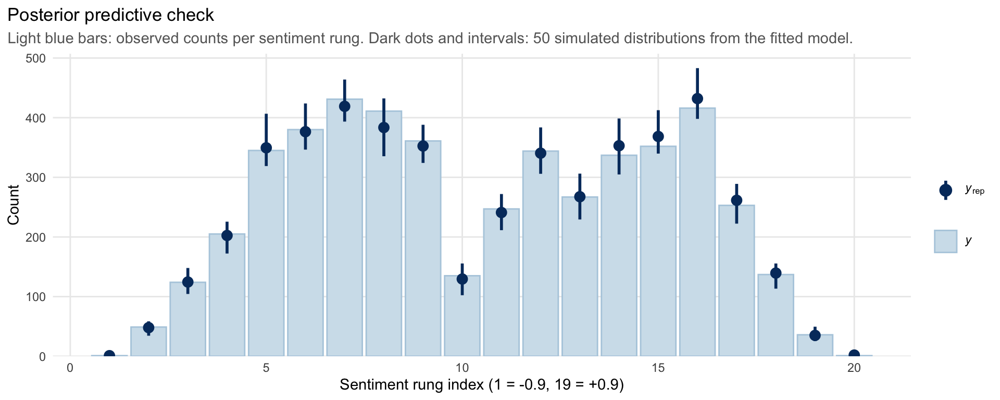

There’s a moment in Suzanne Vega’s Tom’s Diner where the narrator picks up a newspaper, skips the stories, and goes straight to the funnies. It’s a small, accurate observation about reading the news: most of it doesn’t feel good, so you protect yourself.
I wanted to know how true that is, in numbers. Are Lithuanian news headlines as relentlessly negative as they feel? Are some outlets more negative than others?
To find out, I built a small system that hourly pulls RSS feeds from 7 Lithuanian outlets, deduplicates by URL, and sends each new headline to Claude Sonnet 4.6. The model returns three things: a sentiment score in [-1, +1], an IPTC Media Topic label (one of 17 international press categories like politics, sport, crime, law and justice), and up to three named entities.
Two things made this approach attractive. First, Lithuanian is heavily inflected and has limited classical NLP tooling, so a frontier multilingual model handles it cleanly without needing to train anything. Second, using IPTC’s controlled vocabulary instead of letting the model invent topic labels makes per-topic comparisons coherent across outlets. Cost is about $0.001 per headline.
After a week, I had 4,832 scored headlines spanning 9 days. Here’s the distribution of sentiment scores:
Examples below appear in the original Lithuanian with English translations.
To make the score concrete, here are real processed headlines from the dataset at three different sentiment levels and topics. Claude does a pretty good job.
| Score | Topic | Lithuanian | English |
|---|---|---|---|
| -0.7 | disaster, accident and emergency incident | Vilkaviškyje dingo iš ligoninės pasišalinęs nepilnametis | A minor went missing after leaving a hospital in Vilkaviškis |
| 0.0 | economy, business and finance | Klausiate, atsakome. Ar antstoliai nuskaitys atgautas antrosios pensijų pakopos lėšas? | Q&A on whether bailiffs will deduct recovered second-pillar pension funds |
| +0.7 | education | Klaipėdos Vydūno gimnazijos pirmokai Lietuvai atstovaus robotikos čempionate Honkonge | Klaipėda’s Vydūnas Gymnasium first-years will represent Lithuania at a robotics championship in Hong Kong |
The distribution is clearly bimodal, with two humps separated by a trough at zero. Headlines exist to provoke; pure neutrality is rare. Most lean one way or the other, and few are ambivalent.
So I went looking for differences between outlets. The chart said 15min.lt was the most negative outlet in Lithuania. The chart was wrong. Not because the number was wrong, but because the comparison wasn’t fair. Here’s what went wrong, and what the data actually shows.
The first (wrong) finding
I plotted mean sentiment per outlet, ranked them, and got this:

By this measure, 15min sits noticeably below everyone else. If I had published this as the result, it would have looked clean and confident, and it would have been misleading.
What I missed
Outlets cover different mixes of topics, and topics carry their own sentiment baseline. Crime headlines are negative everywhere; sport headlines are positive everywhere. So a fair comparison has to account for what each outlet writes about, not just how their headlines score on average.
What the model says
The right tool is partial pooling with a hierarchical Bayesian model. The intuition: every headline’s sentiment is a sum of effects, namely what topic it’s about, which outlet wrote it, and whether this particular outlet treats this particular topic differently from average. The model estimates each piece simultaneously and shrinks small-sample estimates toward the population mean. So an outlet with three crime headlines doesn’t get to claim a wildly different “crime tone” from one with three hundred. Its estimate gets pulled toward what we know about crime coverage in general.
Three modelling choices need a brief defence:
Why ordinal, not Gaussian? A linear regression on sentiment treats the score as if it were continuous and normally distributed. It isn’t. The scores live on 21 discrete rungs from -1.0 to +1.0 in steps of 0.1, and the histogram you saw earlier is bimodal, not bell-shaped. Fitting a Gaussian model gives sensible rankings but unreliable uncertainty estimates and ugly posterior predictive checks. Cumulative ordinal regression handles the discrete, bimodal structure natively.
Why Bayesian, not frequentist? I fit several frequentist models first as sanity checks (lm, polr, clmm), and they all agreed on the substantive answer. The Bayesian fit adds three things the frequentist alternatives can’t: honest credible intervals on variance components (especially important when the source-level variance is genuinely small and a frequentist point estimate near zero is misleading), proper partial pooling that’s robust to sparse cells in the source by topic interaction, and posterior distributions that visualise uncertainty as shape rather than as a confidence-interval bar.
Why the source by topic interaction? Without it, “outlets are similar on average” would be the only thing the model could say. The interaction term is what lets us ask the more interesting question: does any outlet treat any specific topic unusually, even if it doesn’t differ on average? That’s where editorial fingerprints actually live, and we’ll come back to it.
I fit the model in brms with weakly informative priors and 8 chains by 2000 iterations. All R-hat values came in below 1.01. Diagnostics are in the appendix.
The first thing the model tells us is the variance budget, namely how much of headline-level sentiment variation lives at each level:

Topic-level variation is roughly 12 times outlet-level variation. The story is overwhelmingly: what a headline is about determines how it reads, far more than who wrote it.
Topic effects, the dominant signal
Here’s how each topic shifts sentiment, regardless of outlet. Crime and disaster anchor the negative end across the board; sport and culture anchor the positive end:

The pattern matches intuition: arts, lifestyle, sport, and science cluster at the top. These are stories of achievement, performance, and discovery. Crime and disaster anchor the bottom, with conflict close behind. Politics sits in mildly negative territory, while weather, economy, and health hover near zero, where the framing depends almost entirely on the specific event.
The range is what matters most. Topic effects span more than 5 log-odds top to bottom, a huge range, meaning a sport headline is many times more likely to land in the upper sentiment categories than a crime headline, regardless of who wrote it. Outlet effects, as we’ll see next, span barely a tenth of that.
Outlet effects, what’s left after topic
Once the model accounts for topic mix, the gap between outlets nearly disappears:

These are the same outlets that looked dramatically different in the naive chart. After the model accounts for what each one covers, they’re nearly indistinguishable. Lrytas and 15min lean slightly negative; LRT and Verslo žinios lean slightly positive; the credible intervals overlap heavily and most include zero.
Notice also that the order has shifted from the naive chart. Vakaru ekspresas was at the top of the raw ranking on the strength of just 133 headlines; partial pooling now pulls that small-sample estimate toward the population mean, and Verslo žinios takes the top spot. The differences remain small either way.
The naive ranking didn’t lie about the numbers. It lied about what those numbers meant.
Where outlets actually differ
But “outlets are similar on average” doesn’t mean “outlets are interchangeable.” The interaction term, does this outlet cover this specific topic differently from how that topic is treated on average?, is where editorial fingerprints actually live.

These are the cells that survive the strictest filter, namely combinations where we are 95% confident the effect is nonzero. They’re not the only differences between outlets, just the ones we can be confident about given the data we have.
On the positive side: LRT covers human interest and sport more positively than other outlets do, and 15min covers health more positively than the cross-outlet average for health. On the negative side: Lrytas covers disaster more negatively, LRT covers conflict more negatively, and Delfi covers sport more negatively than the cross-outlet baseline. The Delfi sport finding is notable because sport runs positive everywhere else.
The story isn’t “this outlet is negative.” The story is “this outlet covers this thing unusually.”
What I can and can’t say
This analysis supports:
- Lithuanian news headlines on average sit slightly below sentiment-neutral.
- Topic is by far the strongest determinant of headline sentiment, about an order of magnitude larger than the outlet effect.
- After controlling for topic mix, outlets are far more similar in tone than the raw chart suggests.
- Editorial differences between outlets exist, but live mostly in which topics they cover unusually, not in average tone.
- Crime, conflict, and disaster anchor the negative end across all outlets; sport and culture anchor the positive end.
This analysis does not support:
- Causal claims about why outlets cover what they do.
- Claims about framing in any deep sense. Sentiment of a headline is not the same as bias of a story.
- Generalisation beyond the specific RSS feeds I sampled.
- Anything about audience response. Sentiment of headlines is not sentiment of readers.
Methodology
4,832 headlines from 7 Lithuanian outlets (15min, Bernardinai, Delfi, LRT, Lrytas, Vakaru ekspresas, Verslo zinios) over 9 days. Sentiment scores live on 21 discrete rungs from -1.0 to +1.0 in steps of 0.1, assigned by Claude Sonnet 4.6. Topic labels come from the IPTC Media Topics taxonomy (17 top-level categories). The statistical model is a cumulative ordinal Bayesian regression with random intercepts for source, topic, and source by topic, fit with brms using 8 chains by 2000 iterations (1000 warmup). Priors: normal(0, 5) for thresholds, normal(0, 1) for random-effect SDs. All R-hat values were below 1.01 and effective sample sizes above 1500 across parameters of interest. Pipeline and code are open source.
Software and packages
We used R v. 4.5.2 (R Core Team 2025) and the following R packages: brms v. 2.23.0 (Bürkner 2017, 2018, 2021), grateful v. 0.3.0 (Rodriguez-Sanchez and Jackson 2025), patchwork v. 1.3.2 (Pedersen 2025), scales v. 1.4.0 (Wickham, Pedersen, and Seidel 2025), tidybayes v. 3.0.7 (Kay 2024), tidyverse v. 2.0.0 (Wickham et al. 2019).
Appendix: model diagnostics

If the simulated intervals cover the observed bars, the model is generating data that looks like the data we have.
| Parameter | Estimate | Est.Error | 95% CI lower | 95% CI upper |
|---|---|---|---|---|
| sd_source__Intercept | 0.120 | 0.098 | 0.005 | 0.362 |
| sd_topic__Intercept | 1.412 | 0.245 | 1.019 | 1.969 |
| sd_source:topic__Intercept | 0.423 | 0.061 | 0.314 | 0.554 |
References
Bürkner, Paul-Christian. 2017. “brms: An R Package for Bayesian Multilevel Models Using Stan.” Journal of Statistical Software 80 (1): 1–28. https://doi.org/10.18637/jss.v080.i01.
———. 2018. “Advanced Bayesian Multilevel Modeling with the R Package brms.” The R Journal 10 (1): 395–411. https://doi.org/10.32614/RJ-2018-017.
———. 2021. “Bayesian Item Response Modeling in R with brms and Stan.” Journal of Statistical Software 100 (5): 1–54. https://doi.org/10.18637/jss.v100.i05.
Kay, Matthew. 2024. tidybayes: Tidy Data and Geoms for Bayesian Models. https://doi.org/10.5281/zenodo.1308151.
Pedersen, Thomas Lin. 2025. patchwork: The Composer of Plots. https://doi.org/10.32614/CRAN.package.patchwork.
R Core Team. 2025. R: A Language and Environment for Statistical Computing. Vienna, Austria: R Foundation for Statistical Computing. https://www.R-project.org/.
Rodriguez-Sanchez, Francisco, and Connor P. Jackson. 2025. grateful: Facilitate Citation of R Packages. https://pakillo.github.io/grateful/.
Wickham, Hadley, Mara Averick, Jennifer Bryan, Winston Chang, Lucy D’Agostino McGowan, Romain François, Garrett Grolemund, et al. 2019. “Welcome to the tidyverse.” Journal of Open Source Software 4 (43): 1686. https://doi.org/10.21105/joss.01686.
Wickham, Hadley, Thomas Lin Pedersen, and Dana Seidel. 2025. scales: Scale Functions for Visualization. https://doi.org/10.32614/CRAN.package.scales.